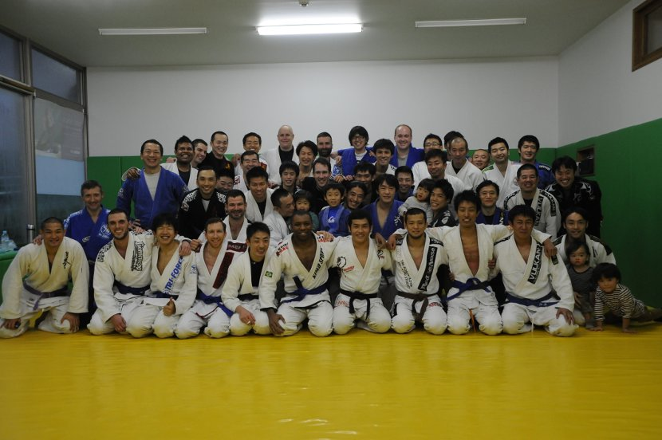

The Connection
Sun 03 February 2013 by Matt HelmerBeginner's Mind
Trying to improve yourself by learning a new skill can be intense. You may feel like you're in over your head. Like you're on the verge of acute embarassment. The pit of your stomach suddenly feels hollow, like you forgot your arms and legs. There must be some evolutionary explanation for this instinctive reaction to the possibility of failing at something new. Perhaps it simply boils down to risk aversion. Whatever the case, it is a reaction that one must overcome in order to make gains. The decision to learn programming and, more recently, BJJ, has for me been, more than any other motivating factor, about overcoming the fear of making mistakes.
Zen of Python
I have always enjoyed using computers, but, whenever I compared myself to peers who had been programming for years, I always felt like it was too late for me to learn to code. That is a pretty sad point of view for a person of any age, let alone someone still in his 20's. The more time passed, the more unlikely it seemed that I would ever learn a programming language.
At some point, however, I decided that enough was enough: I would learn to code. But where to start? Although the amount of free resources available to beginners nowadays is incredible, in some ways it is like drinking water from a firehose. I asked around. A few names regularly popped up. I had heard from various sources that either Python or Ruby would be a good first language. I recall an article which described Python as having, generally, one best way of doing things. I liked the idea of there being a correct way of doing things, so Python it was.
I ordered the book Learning Python, by Mark Lutz. Midway through the first chapter I realized that I had no idea how to use the Mac OS X command line interface (CLI). This is where having a computer-savvy girlfriend (now wife) paid off. She got me the easy-to-understand reference book The Mac OS X Command Line: Unix Under the Hood, by Kirk McElhearn. This was enough to familiarize myself with the basics of using the Mac Terminal and, subsequently, my ability to trudge through Learning Python.
At this point in my programming career, it is safe to say that I am fully addicted to learning. Probably every programmer can relate to that "I was lost, but now I see" sort of a-ha! moment. Tremendous frustration, followed by deep thought, followed by a completely unrelated activity allowing the mind time to digest the problem (walking/showering/washing dishes), and at last, the solution surfaces! It is a joyous feeling. Knowing that the types of problems I have solved as an extremely mediocre programmer pale in comparison to challenges solved by professional programmers is an exciting notion. When I think about the ocean of programming experiences that lies ahead of me, it is exciting. Creative problem solving is what programming is all about, and I am loving it.
Rolling in the Deep
Getting into BJJ was not dissimilar to getting into Python. I had always wanted to train in a martial art, but again, the more time passed without taking that first step, the more imposing that first step seemed to grow. As I have grown older, the ability to defend myself and loved ones has become increasingly important to me. The ability to avoid a violent confrontation is always first in my mind (I try to follow the Gracie family ideas on self-defense: Diffuse, Evade, Attack), but I also realize that you never know when some jerk on the street is going to catch you off guard (thank you, Youtube).
Given the multitude of martial arts, why did I choose to study BJJ? Honestly, I simply recalled hearing the Gracie name from early UFC days and thought, hey, if Royce Gracie can take down giants, then maybe it could work for me, too (not that I have any illusions about stepping into an octagon). I googled "BJJ Tokyo" and soon found out about Tri-Force Aoyama. I contacted the head instructor, Yuki Ishikawa, and found him to be very welcoming, so I made arrangements for a trial lesson.
One of my favorite writers, Sam Harris, wrote an excellent blog post about his first time training BJJ. In BJJ, sparring is commonly referred to as "rolling", since so much of BJJ is spent honing one's ground-fighting skills. Sam Harris describes his first time rolling against an experienced BJJ practitionar as akin to drowning. I felt the same way at my trial lesson.
I have a lot of experience with weight-training and am relatively strong, but I was rendered absolutely helpless by a blue belt opponent who weighed probably 25kg less than me. All of my strength applied directly against my opponent failed me. Rather, my opponent used my action against me, deflecting my strength via leverage and technique. I quickly became exhausted and was left with no strength, and little way of defending myself. Getting choked by someone whom you expect to manhandle is a humbling experience. That first trial lesson was, for me, a revelation of the power of BJJ. An apt description would perhaps be "painful befuddlement, followed by enlightenment". I have been hooked ever since.
Where There's a Will...
I am not yet very good at either of these endavours. That is not the point. In Japanese, traditional fighting systems fall under a broader philosophy known as "Bushido" (武士道). The last character, "do", means something like "the road", or "the way". It can signify a method of living. It represents, to me, the idea of a journey, or process required to master the complexities of martial arts (and programming). It signifies a learning curve that must be traversed on the way to a higher state of thought and physical practice. Both BJJ and programming are providing me an education in step-by-step learning, learning by doing, and piecing together basic principles to create effective tools. Again, I am not very good at either of these arts. But someday, I will be a few miles from where I started, and that's the point.
